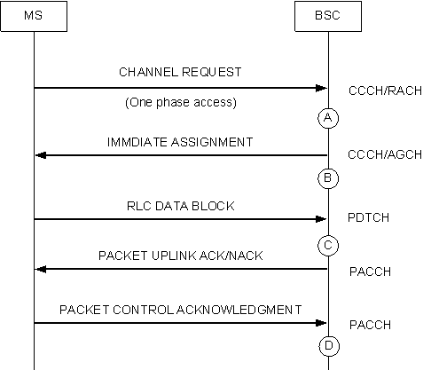
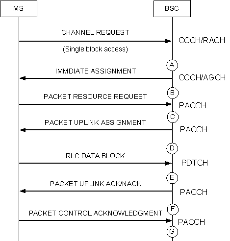

Measurement Counter
A9202: UP_EGPRS_TBF_ESTB_SUCC
Description
This measurement provides the number of successful uplink EGPRS TBF establishments in a granularity period. A low measurement value indicates that the radio environment, network parameter configuration, network resource configuration, or network equipment is not satisfactory, and thus requires optimization. Further analysis should be made on the basis of the causes of the EGPRS TBF establishment failure. Together with Number of Uplink EGPRS TBF Establishment Attempts, this measurement indicates the uplink assignment success rate in a granularity period. Together with Number of Uplink EGPRS TBF Abnormal Releases due to N3101 Overflow (MS No Response), this measurement indicates the call drop rate of the uplink TBF in a granularity period.
Unit
Integer number or integer.
Measurement Point
Successful uplink EGPRS TBF establishment using one phase access
If the BSC receives the uplink blocks on the channel assigned to the MS after sending the IMMEDIATE ASSIGNMENT message, then the uplink EGPRS TBF establishment using one phase access is successful. Figure 1 shows the procedure of uplink EGPRS TBF establishment using one phase access. Each time the BSC receives the first uplink block from the MS after sending the IMMEDIATE ASSIGNMENT message (see measurement point C), the counter is incremented by one.
Figure 1 One phase packet access request received on the RACH

Successful uplink EGPRS TBF establishment using single block access
If the BSC receives the uplink blocks on the channel assigned to the MS after sending the PACKET UPLINK ASSIGNMENT message, then the uplink EGPRS TBF establishment using single block access is successful. Figure 2 shows the procedure of uplink EGPRS TBF establishment using single block access. Each time the BSC receives the first uplink block from the MS after sending the PACKET UPLINK ASSIGNMENT message (see measurement point E), the counter is incremented by one.
Figure 2 Single block packet access request received on the RACH

Uplink EGPRS TBF establishment on the PACCH (Uplink EGPRS TBF establishment in a downlink EGPRS TBF)
When the MS initiates an uplink EGPRS TBF establishment request on the PACCH, the BSC sends the PACKET UPLINK ASSIGNMENT message to the MS. If the BSC receives the uplink data blocks on the channel assigned to the MS, then the uplink EGPRS TBF establishment on the PACCH is successful. Figure 3 shows the procedure of uplink EGPRS TBF establishment on the PACCH. Each time the BSC receives the uplink blocks from the MS after sending the PACKET UPLINK ASSIGNMENT message (see measurement point C), the counter is incremented by one.
Figure 3 Uplink TBF establishment in the downlink TBF
Formula
This is an original counter without involving any formula.